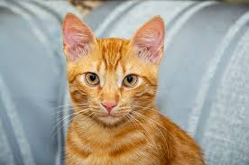

Kucing
Kucing adalah hewan peliharaan yang populer dan dikenal karena sifatnya yang lucu dan menggemaskan. Mereka merupakan salah satu hewan peliharaan yang paling umum di seluruh dunia.
Apakah anda sedang mencari hewan peliharaan? kami punya rekomendasi untuk anda
Kucing adalah hewan peliharaan yang populer dan dikenal karena sifatnya yang lucu dan menggemaskan. Mereka merupakan salah satu hewan peliharaan yang paling umum di seluruh dunia.
Anjing dikenal sebagai sahabat terbaik manusia. Mereka setia dan sering kali berperan sebagai anggota keluarga yang sangat berharga.
Kelinci adalah hewan peliharaan yang menyenangkan dengan bulu yang lembut dan tingkah laku yang menggemaskan. Mereka sering dijadikan hewan peliharaan di rumah-rumah.
Kura-kura adalah hewan peliharaan yang unik dan menarik. Mereka memiliki cangkang keras yang melindungi tubuh mereka dan sering kali dijadikan hewan peliharaan di rumah-rumah.
Ikan adalah hewan peliharaan yang menarik dan menyenangkan. Mereka sering dijadikan hewan peliharaan di akuarium dan dapat memberikan hiburan yang menyenangkan bagi pemiliknya.
Burung adalah hewan peliharaan yang cerdas dan menarik. Mereka sering dijadikan hewan peliharaan di rumah-rumah dan dapat memberikan hiburan yang menyenangkan bagi pemiliknya.
Otter adalah hewan peliharaan yang lucu dan menggemaskan. Mereka sering dijadikan hewan peliharaan di rumah-rumah dan dapat memberikan hiburan yang menyenangkan bagi pemiliknya.
Sugar glider adalah hewan peliharaan yang unik dan menarik. Mereka sering dijadikan hewan peliharaan di rumah-rumah dan dapat memberikan hiburan yang menyenangkan bagi pemiliknya.